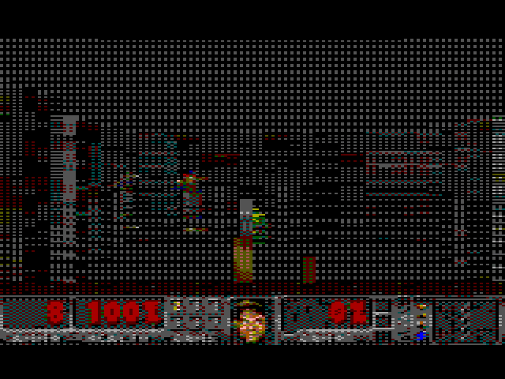

doom DOOM, Freedoom's E1M1
The real first level on a grid, DOOM's lighting and status bar, four kinds of monster, sound, and a floor that reflects everything in real time.
- reflections cost 0.6% of the frame: the engine compiles them into its wall routines at boot
- the disk holds palette numbers; the CoCo forges 30 pages of lit, dithered art itself, checked byte for byte
- 16 of 64 colours, chosen for what their blends can show; the dither is just a choice of page
- found on the way: 85 wall classes × 3 bytes is one byte too many for a page, and the GIME shows its I/O registers at $FE00 whatever page is mapped